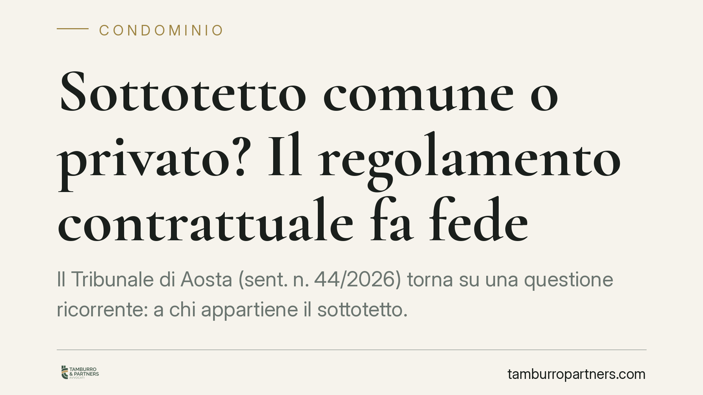

Sottotetto comune o privato? Il regolamento contrattuale fa fede
Il Tribunale di Aosta (sent. n. 44/2026) torna su una questione ricorrente: a chi appartiene il sottotetto. Quando il regolamento condominiale di natura contrattuale lo qualifica come bene comune, l'uso esclusivo e le opere edilizie realizzate dal singolo condomino non valgono ad acquisirne la proprietà. Il risultato è l'obbligo di rilascio, il ripristino dello stato dei luoghi e il risarcimento.

Il caso
Un condomino dell'ultimo piano aveva utilizzato in via esclusiva il sottotetto dell'edificio, intervenendo anche con modifiche edilizie e trattando di fatto lo spazio come proprio. Il condominio ha agito in giudizio per ottenerne il rilascio. La difesa del condomino si fondava sull'usucapione: un uso prolungato e visibile dello spazio, tale da giustificare l'acquisto della proprietà.
Il Tribunale di Aosta, con la sentenza n. 44/2026, ha respinto questa tesi. Il punto decisivo è stato il regolamento condominiale, di natura contrattuale, che indicava il sottotetto tra i beni comuni.
Inquadramento normativo
L'art. 1117 del codice civile elenca le parti dell'edificio presunte comuni, salvo diversa indicazione del titolo. Il sottotetto non è menzionato espressamente, ma la giurisprudenza lo considera comune quando svolge una funzione a vantaggio dell'intero fabbricato (ad esempio isolamento termico della copertura) o quando è il titolo stesso ad attribuirgli tale natura.
Il "titolo" è spesso proprio il regolamento condominiale. Qui occorre distinguere. Il regolamento assembleare, approvato a maggioranza, disciplina l'uso delle cose comuni ma non può incidere sui diritti di proprietà. Il regolamento contrattuale, invece, è accettato da tutti i condomini (di norma negli atti di acquisto) e ha efficacia negoziale: può ripartire la proprietà, costituire vincoli e qualificare i beni. Quando questo documento dichiara comune il sottotetto, quella qualificazione vincola tutti.
Perché l'usucapione non ha funzionato
L'usucapione presuppone un possesso esclusivo, pacifico e continuato per il tempo previsto dalla legge (venti anni per gli immobili). Ma il possesso deve essere incompatibile con il diritto altrui: deve manifestare, verso gli altri condomini, la volontà di escluderli dal bene.
Il semplice uso più intenso di una cosa comune, da parte del condomino che vi accede con maggiore facilità, non basta. L'uso esclusivo del sottotetto da parte del proprietario dell'ultimo piano è, di per sé, tollerato e compatibile con la comproprietà degli altri. Per usucapire occorre un atto di interversione del possesso: una manifestazione chiara e opponibile agli altri condomini della volontà di possedere il bene come proprietario esclusivo, non come semplice utilizzatore.
Nel caso di Aosta, le modifiche edilizie non sono state ritenute sufficienti a dimostrare questa inversione. Da qui la condanna al rilascio, alla rimessione in pristino dello stato dei luoghi e al risarcimento del danno da occupazione illegittima dello spazio comune.
Implicazioni pratiche
Per chi vive all'ultimo piano, la sentenza è un avvertimento. L'accesso privilegiato al sottotetto e il suo utilizzo ininterrotto non creano un diritto di proprietà. Investire in opere di trasformazione su un bene comune espone a un doppio rischio: perdere la spesa sostenuta per il ripristino e dover risarcire il condominio.
Per il condominio, al contrario, la pronuncia conferma la forza del regolamento contrattuale come strumento di tutela della proprietà comune. Conoscere la natura del proprio regolamento diventa quindi essenziale prima di qualsiasi contestazione.
Cosa fare in concreto
- Verificate la natura del regolamento. Controllate se è contrattuale (richiamato o allegato agli atti di acquisto) o solo assembleare: l'efficacia sulla proprietà è radicalmente diversa.
- Leggete le tabelle e gli allegati. Spesso la qualificazione del sottotetto emerge da planimetrie o descrizioni analitiche dei beni comuni.
- Non avviate opere edilizie su spazi contesi senza aver prima chiarito, con documenti alla mano, la titolarità del bene.
- Documentate il possesso se intendete far valere un'usucapione: servono atti concreti e opponibili agli altri condomini, non il semplice uso prolungato.
- Consigliamo una verifica preventiva del titolo prima di promuovere o resistere a un'azione di rilascio, per valutare le reali possibilità di esito.
La questione del sottotetto si decide quasi sempre sulle carte. Prima dei fatti, conta ciò che il titolo stabilisce.
---
*Contributo informativo a cura di Tamburro & Partners - Avv. Giuseppe Tamburro. Non costituisce parere legale.*
Ogni condominio ha una storia a sé.
Se gestisci un'amministrazione e vuoi un confronto su una specifica questione condominiale, scrivi allo studio. Ti rispondiamo entro un giorno lavorativo.